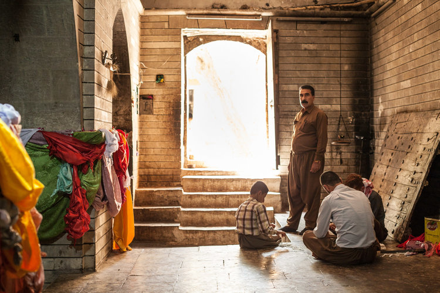

Katie Klepek Midwestern, United States August 24, 2020
Back-to-school already?! We know—the summer flew by, but it’s time to help your kid transition from the lull of summer into a set routine that will make life easier for the whole family. Use our simple back-to-school tips to re-establish a daily routine for your children and to prepare them for another exciting year—no matter where their classroom is.
Life in an orphanage: peter's story
Rebekah Kates Lemke Baltimore, Maryland April 19, 2017
“We rarely got called by our names. We were so many, a lot of times it was ‘wewe.’ Wewe is ‘you’ in Swahili. Even Scripture tells us that God knows our name. And here is a place you are supposed to call home and you’re not even called by your name.” — Peter Kamau
Missteps
Jessie Parks Atlanta native March 23, 2017

Lalish is the holy heartland of the Yazidi people, tucked in the valleys of the Nineveh Province of Iraqi Kurdistan. The nice folks there walk around shoeless, kissin' door frames, walls, and the ground here and there. They never step on, but always over, the thresholds of all the temple doorways—and asked that we do the same.